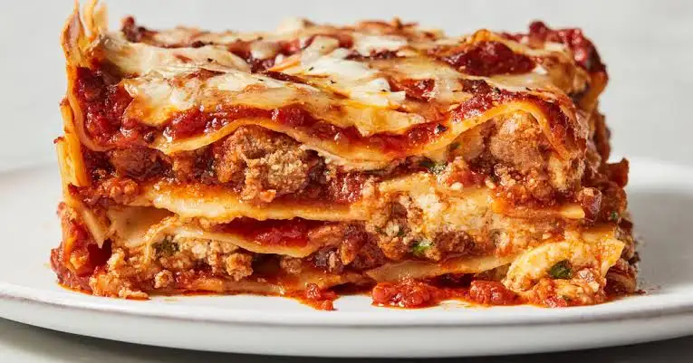

Lasagna

Lasagna
Ingredients
-
Beef: This easy lasagna starts with ground beef. You can use ground
turkey for a lighter option.
- Cheeses: You’ll need cottage cheese, mozzarella, and Parmesan.
-
Eggs: Eggs help bind the cheese mixture together. Plus, they lend
moisture and richness.
-
Seasonings: Season the easy lasagna with dried parsley, salt, and
black pepper.
“Steps”
-
Gather all ingredients and preheat the oven to 350 degrees F (175
degrees C).
-
Heat a large skillet over medium-high heat. Cook and stir ground beef
in the hot skillet until browned and crumbly, 8 to 10 minutes. Drain
and discard grease. Stir in spaghetti sauce and simmer for 5 minutes.
-
Combine cottage cheese, 2 cups of mozzarella cheese, eggs, 1/2 of the
grated Parmesan cheese, dried parsley, salt, and pepper in a large
bowl.
-
Spread 3/4 cup of sauce in a 9x13-inch baking dish. Cover with 3
uncooked lasagna noodles, 1 3/4 cups of cheese mixture, and 1/4 cup
sauce; repeat layers once more. Top with remaining 3 noodles, sauce,
mozzarella, and Parmesan cheese. Pour 1/2 cup water along the edges of
the dish. Cover tightly with aluminum foil.
-
Bake in the preheated oven until the lasagna is hot and bubbly, 45 to
50 minutes. Remove the foil and bake until the cheese is lightly
browned, 10 to 15 minutes more. Let stand for 15 minutes before
serving.